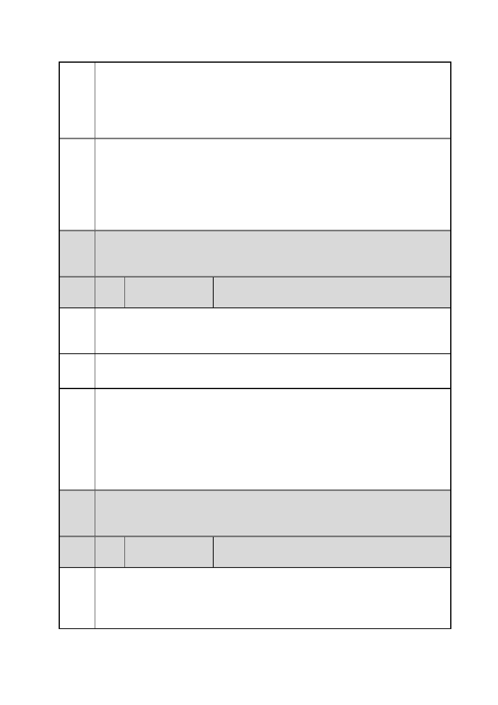

臺北市都市計畫委員會 公民或團體陳情意見綜理表
案
名
委員
會議
決議
編
號
陳情
理由
建議
辦法
「變更臺北市信義區逸仙段二小段 33 地號等 21 筆土地（原臺北機廠）
工業區為創意文化專用區、特定專用區、道路及綠地用地主要計畫案」
及「擬定臺北市信義區逸仙段二小段 33 地號等 21 筆土地（原臺北機
廠）創意文化專用區、特定專用區、道路及綠地用地細部計畫暨劃定
都市更新地區計畫案」
二、忠孝東路 4 段 553 巷之功能定位為供社區進出，過去在臺北文化
體育園區都市計畫變更審議階段，皆保留其以地區活動為主之交通機
能，並未規劃拓寬 553 巷，以免引進太多穿越性車流造成路側居民之
交通衝擊。本計畫區係規劃以市民大道及東興路為主要進出動線，故
未將菸廠路連接 553 巷，造成穿越性車流經 553 巷通往忠孝東路及基
隆路。
內容同編號 1。
57 陳情人
楊○福（單一申訴窗口 1999 市民熱線）
地點：信義區市民大道五段 48 號（臺北機廠）
事由：市民表示因上述地點有許多稀有文錄和珍貴文物，針對土地使
用的部分應該要做藝文特區而不要做都市更新賣給財團圖利。
訴求：敬請權責單位參酌辦理。
市府
回應
委員
會議
決議
編
號
陳情
理由
一、有關臺北機廠再利用之定位及鐵道文化資產之保留方式，詳如編
號 1 市府回應內容。
二、有關反對都市更新乙節，為避免各園區建築量體形成對文化資產
之圍鎖封閉效果及環境衝擊，本計畫土地產權單純，98.76％為臺鐵
局經管之國有土地，並無透過都市更新促進土地整合之需求，故細部
計畫已取消劃定都市更新地區。
內容同編號 1。
58 陳情人
徐○奏、王○瑜、林○維、張○興
請臺鐵局於此次將原台北機廠用地（即信義區逸仙段二小段 33 地號
等 21 筆土地）向台北市政府申請開發案中，其中之逸仙段二小段 347
地號係民等向貴局承租供自用住宅居住之用，請按現民等之居住現狀
同意將該基地申請由工業區變更為住宅區。俾符實際。
第 85 頁/共 154 頁